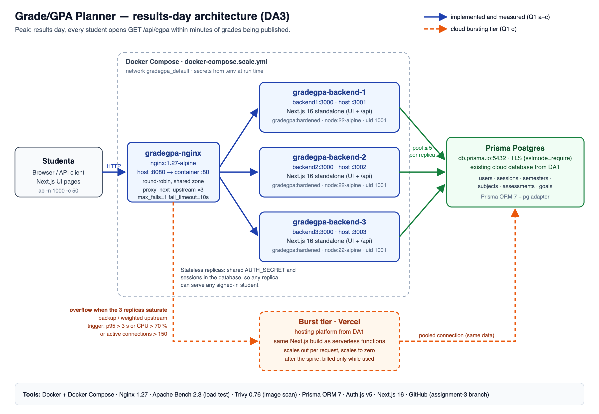

The cloud application from Assignment 1: Next.js 16, Prisma, Auth.js, Prisma Postgres cloud database, hosted on Vercel.
gradegpa-nginx · nginx:1.27-alpine · :8080
gradegpa-backend-1 / 2 / 3 · :3001 :3002 :3003
→ Prisma Postgres (db.prisma.io, TLS)
Stateless replicas: sessions live in the database, one shared AUTH_SECRET.
backend-1 336
backend-2 335
backend-3 335
$ for i in 1 2 3 4 5 6; do curl -s localhost:8080/api/health; done {"status":"ok","instance":"backend1"} {"status":"ok","instance":"backend2"} {"status":"ok","instance":"backend3"} {"status":"ok","instance":"backend1"} {"status":"ok","instance":"backend2"} {"status":"ok","instance":"backend3"}
| Metric | 1 instance | 3 instances | Change |
|---|---|---|---|
| Requests per second | 3.19 | 9.27 | 2.91× higher |
| Average response time | 15,693 ms | 5,394 ms | 65.6 % lower |
| 95th percentile | 18,568 ms | 8,909 ms | 52.0 % lower |
| Failed requests | 0 | 0 | — |
The bottleneck is database round trips. Each replica brings its own pool of 5 connections, so 3 replicas work on 15 requests at once.
991 × 200, 9 × 502 Bad Gateway
1,000 × 200; 25 requests replayed on a healthy replica
upstream gradegpa_backend {
zone gradegpa_backend 64k;
server backend1:3000 max_fails=1 fail_timeout=10s; # same for backend2, backend3
}
proxy_connect_timeout 2s;
proxy_next_upstream error timeout http_502 http_503 http_504; # GET only — writes are never replayed
proxy_next_upstream_tries 3;

-- BEFORE (a legacy account imported with a plain-text password) legacy@example.com | STUDENT | legacy123 student@example.com | STUDENT | $2b$12$aIa5qrCZXlMxGQ1wIovMmuH90dbgH2N6Qdpcp7GJR8YIgTXuLpyr. $ npx tsx scripts/hash-plaintext-passwords.ts 3 account(s) with a password; 1 stored in plain text. hashed: legacy@example.com -- AFTER legacy@example.com | STUDENT | $2b$12$vixsTHxukan0qqP6f5YHRe8m.OtxtNwSRFB8x8iZ./GbgQNoPFxmm student@example.com | STUDENT | $2b$12$aIa5qrCZXlMxGQ1wIovMmuH90dbgH2N6Qdpcp7GJR8YIgTXuLpyr.
401 DELETE /api/subjects/{id} no cookie → UNAUTHORIZED 401 PUT /api/subjects/{id} no cookie → UNAUTHORIZED 401 DELETE /api/subjects/{id} forged cookie → UNAUTHORIZED 401 POST /api/auth/login password only → MFA_REQUIRED 401 POST /api/auth/login replayed code → UNAUTHORIZED 200 PUT /api/subjects/{id} student (owner) → ok 204 DELETE /api/semesters/{id} student (owner) → ok 200 GET /api/subjects advisor read → ok 403 PUT /api/subjects/{id} advisor update → FORBIDDEN: not permitted to modify academic records 403 DELETE /api/subjects/{id} advisor delete → FORBIDDEN: not permitted to modify academic records
| Image | Size | User | Critical | High |
|---|---|---|---|---|
| Baseline · node:22 (Debian) | 3.94 GB | root | 27 | 487 |
| Alpine · multi-stage · non-root | 343 MB | uid 1001 | 3 | 3 |
| + Next.js 16.4.1 security upgrade | 315 MB | uid 1001 | 0 | 0 |
Also: no npm in the runtime image, read-only app files, no secrets in layers, health check.
| Threat agent | Control implemented | GDPR requirement |
|---|---|---|
| External attacker reusing stolen or phished passwords | TOTP MFA (single-use codes, encrypted secret) + salted bcrypt + rate limit | Art. 32: security appropriate to the risk, incl. encryption and confidentiality |
| Malicious insider a peer or staff member altering marks | Read-only ADVISOR role (403), ownership checks, revocable sessions, non-root containers | Art. 5(1)(f) integrity and confidentiality; Art. 25 data protection by design |
GDPR applies because names, emails and marks are personal data of identifiable students. India's DPDP Act 2023 sets the same duty.